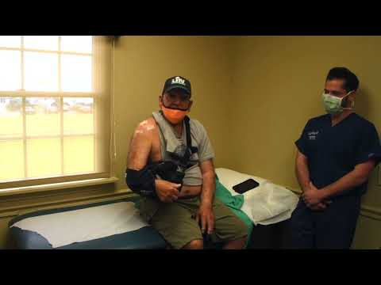
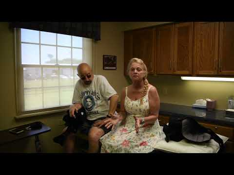
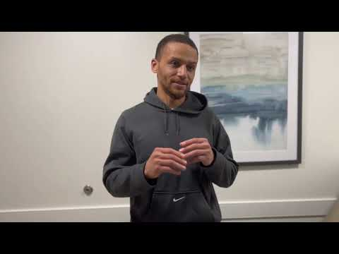
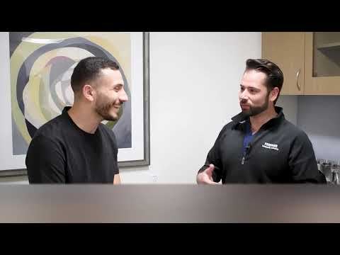

01
He reads your MRI with you
Dr. Ayzenberg goes over your imaging with you, then plans the repair around exactly what it shows.
Iron Mountain Orthopaedic Institute
See Dr. Mark Ayzenberg, a top-rated orthopaedic surgeon in Philadelphia. Get the right repair and a clear plan to return to work and sport. Most procedures are minimally invasive and outpatient, and Dr. Ayzenberg sees you at every follow-up.
A few questions to start. Your first visit is in person.

When waiting is not working
You have done the physical therapy. The cortisone shot wore off. Now the MRI says tear, or a doctor has already said surgery.
Pain you put up with for years can mean damage that keeps adding up. It is time to see the surgeon who would do the repair.
The Iron Mountain care model
The plan begins with what your imaging shows and what you need to get back to.
Dr. Ayzenberg goes over your imaging with you, then plans the repair around exactly what it shows.
Most repairs are arthroscopic, with incisions under a centimeter long. Less cutting usually means less pain and an earlier start on rehab.
Your rehabilitation is built around the work, sport and daily life you want to return to, with checkpoints along the way.
The surgeon who operated checks your progress, so the person adjusting your rehab knows exactly what was repaired.
Typical recovery ranges
The exact path depends on what is repaired. These milestones show the range many patients plan around.



Typical ranges only. Individual results and recovery vary.
Patient and professional feedback
“From the office staff to the doctor himself, this practice was an absolute joy to deal with. After surgery I am pain free and walking as well as I did before my injury.”
“This is my 2nd major surgery he's done on me and I wouldn't go to anyone else. Complete trust.”
“My shoulder is doing great after 12 weeks post op. Can not recommend him high enough!”
“Dr. Ayzenberg is by far the best and the most trustworthy Orthopedic doctor and surgeon that I know.”
Individual results vary.
Meet the surgeon
Dr. Ayzenberg started Iron Mountain so patients get longer visits and real time with their surgeon.
He trained in sports medicine, arthroscopy and reconstruction at the Southern California Orthopaedic Institute after residency at Einstein in Philadelphia. He is board-certified in both orthopaedic surgery and sports medicine.
Patients bring him cases that need deep repair experience, including massive rotator cuff tears, complex shoulder reconstructions and repairs that did not hold the first time. One patient traveled 6,000 miles for a rare latissimus tendon repair.

A patient traveled 6,000 miles for a rare repairRepair expertise
Dr. Ayzenberg does not perform knee or hip replacements.
Your consultation
In one visit, you will understand what is wrong and how it can be repaired.
Tell the team about your joint, coverage and distance from Huntingdon Valley.
If your coverage and distance work, choose a time for the team to call and book the visit.
Bring your imaging, reports and the questions you want answered.
Questions before you book
Yes. If you go ahead with surgery, he performs it.
Yes. Bring your scans and reports. Dr. Ayzenberg will give you his own opinion and plan for the repair.
You will get a visit date on your call with the team. If you need to be seen sooner, physician assistant Jamie Hermance can often see you first, and Dr. Ayzenberg reviews your plan either way.
Usually less than people expect. With arthroscopic repairs, the worst of it typically passes within days. Your exact experience depends on the procedure and your health.
Yes. Dr. Ayzenberg performs revision surgery, which means redoing a repair that did not hold. Bring your operative report and imaging.
Age alone does not decide it. Dr. Ayzenberg considers the tear, your health and what you want to return to, then explains whether surgery makes sense for you.
Start with the joint that is limiting you
The sooner you are seen, the sooner you can plan your path back. Start with a few questions.
Your first visit is an in-person exam. Whether surgery is right for you is decided with Dr. Ayzenberg at that visit. Individual results and recovery vary.